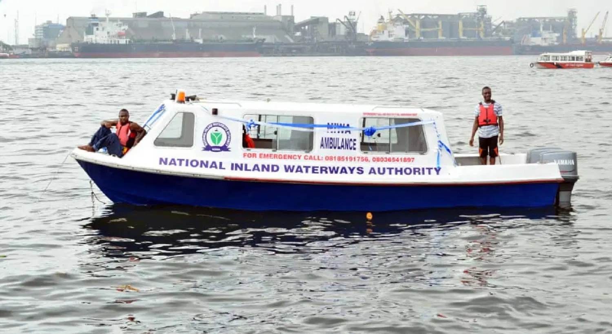

NIWA restate commitment to safer waterways

The National Inland Waterways Authority (NIWA) has reaffirmed its commitment to making maritime policies deliver practical improvements in waterway safety, infrastructure and economic growth. Acting Managing Director Alhaji Yusuf Girei made the pledge at the 2026 World Maritime Day celebration, held under the theme “From policy to practice: Powering excellence”.
Girei said policies create value when they lead to action, including safer waterways, dependable infrastructure, environmental protection and services that support trade. He commended stakeholders for their work to advance Nigeria’s maritime sector.
He said NIWA would continue working with state governments, industry stakeholders, host communities and development partners to improve navigation, strengthen safety standards, modernise facilities and protect waterways that support livelihoods. Girei also described excellence as a shared responsibility, requiring skilled professionals, effective regulation, investment in innovation and a focus on safety and sustainability.
The celebration was attended by Minister of Marine and Blue Economy Dr. Adegboyega Oyetola, Permanent Secretary Mrs. Fatima Sugra Mahmood, keynote speaker Mrs. Mfon Usoro, ministry officials, heads of agencies, diplomatic representatives and industry stakeholders. Girei also took part in presenting awards in the primary school essay competition sponsored by NIWA. First place went to Idris Jibril Oladimeji of Holy Cross Primary School in Lagos, who received N200,000 and a laptop computer.
Source: Vanguard